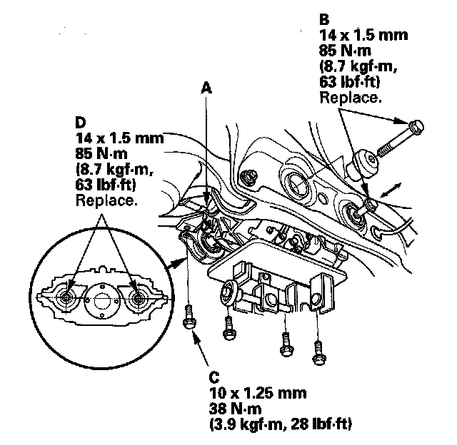
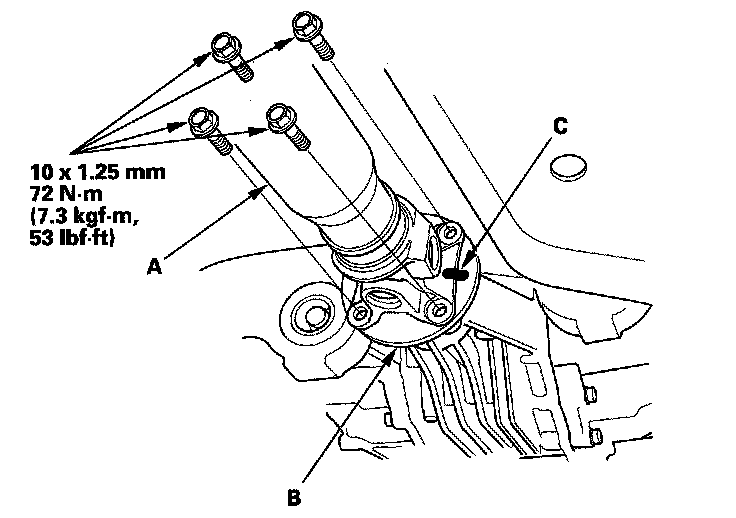

Rear Differential Installation
Rear Differential Installation1. Raise the rear differential with the transmission jack.
2. If the original differential is being reinstalled, replace the set rings.
3. Raise the rear differential a little on the transmission jack.
4. Connect the ground cable (A) to the rear differential.
5. Connect the left clutch solenoid 4P connector (B) then install the harness clips (C).
6. Raise the rear differential a little on the transmission jack.
7. Connect the breather tube (A) to the breather pipe (B) and the clip (C).
8. Connect the right clutch solenoid 4P connector (D) and the rear differential fluid temperature sensor 2P connector (E) then install the harness clip (F).
9. Install the left rear driveshaft inboard joint (A) to the rear differential.

10. Raise the rear differential to the mounting level, then hand tighten the new rear differential rear mounting bolts (B) and rear differential front mounting bracket bolts (C).
11. Loosen the differential front mounting bolts (D).
12. Tighten the new rear differential rear mounting bolt then tighten the rear differential front mounting bracket bolts.
13. Tighten the rear differential front mounting bolts.
14. Attach the propeller shaft (A) to the rear differential (B) by aligning the reference marks (C) you made during the removal procedure.

15. Install the right rear driveshaft.
16. Install the new exhaust pipe gasket (A) and exhaust pipe (B).
17. Refill the differential fluid.
18. Check the wheel alignment, and adjust it if necessary.